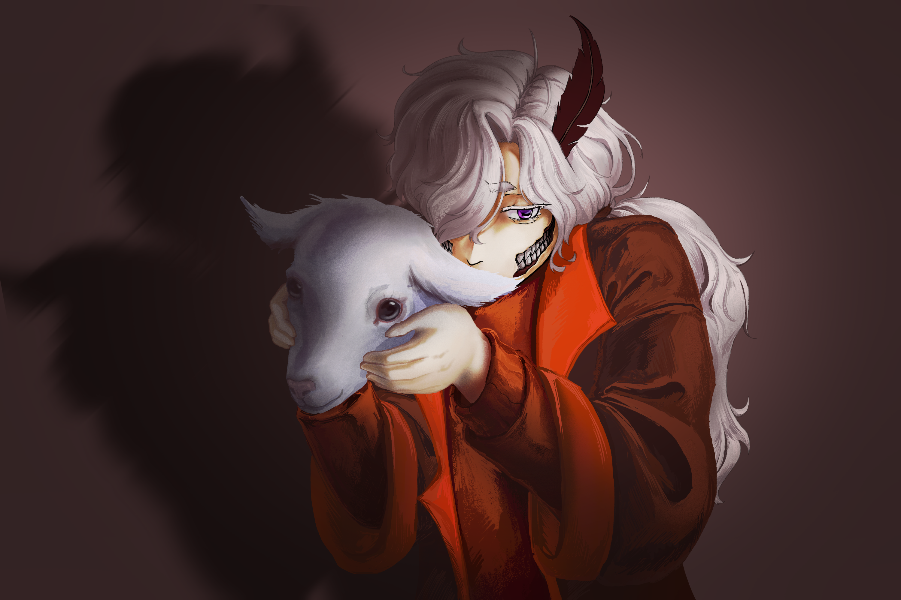
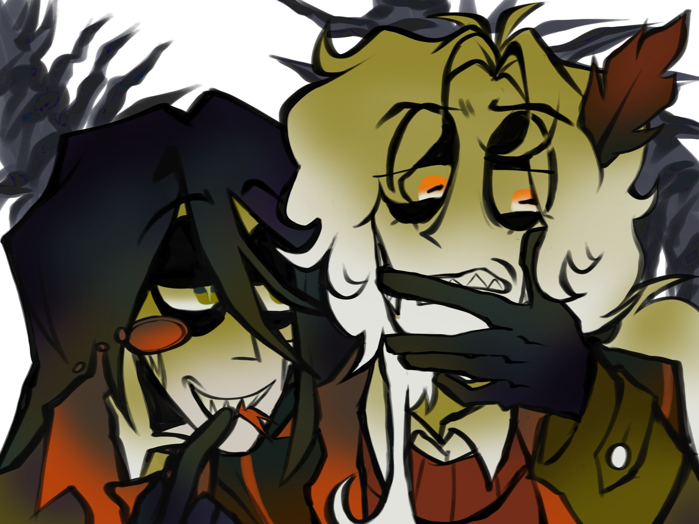
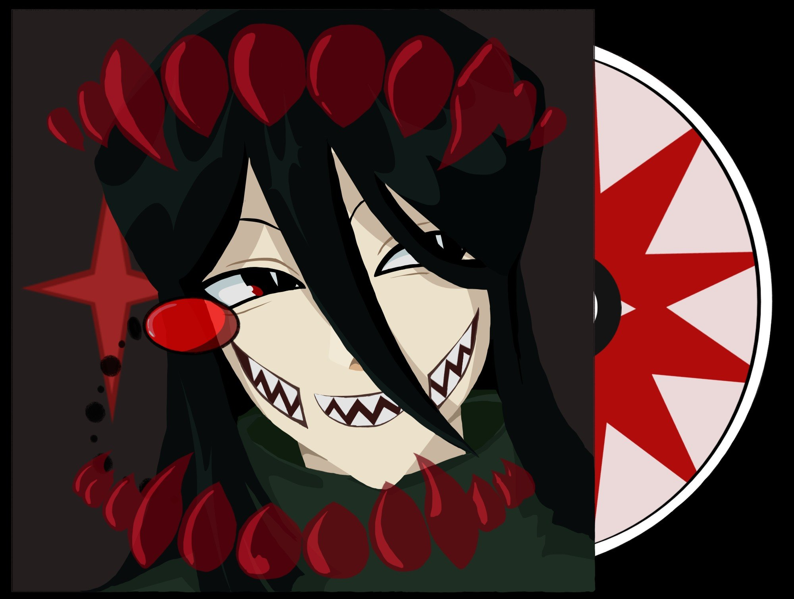
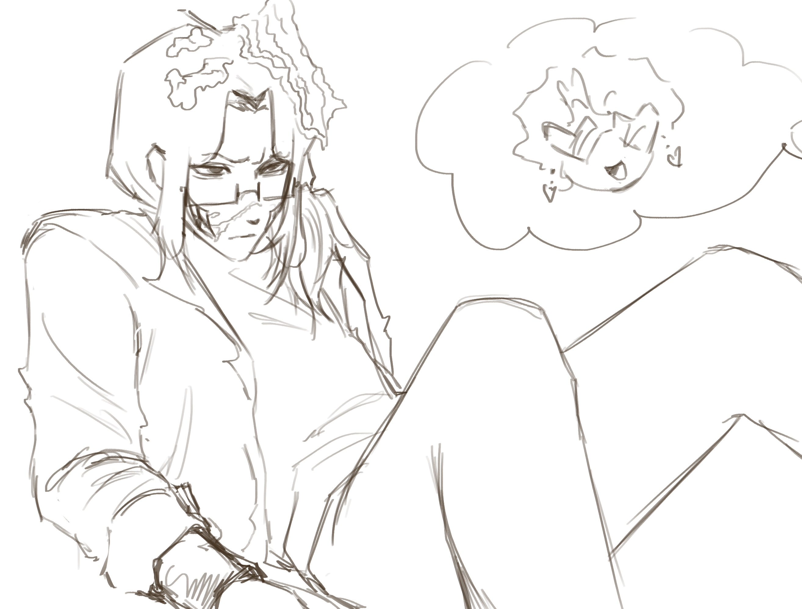

Корделия 🎨
Работы Корделии
Дорогой Нуль, для меня это все же удивительная новость, что мы, да и в целом все собравшиеся здесь люди, так хорошо сблизились с тобой. Этот день полностью посвящен тебе, но если расписывать всю стену только для тебя, ты состаришься до моего возраста и не дойдешь до других.
Я искренне рада, что судьба все же сблизила нас. Ты весьма интересный человек, чьи интересы очень занимательны. Спасибо, что познакомил с чудесными проектами, которые раньше откладывались в дальний ящик, но еще большую благодарность я хочу выразить твоему чудеснейшему сеттингу.
Признаюсь, твой сеттинг — первый, которым я заинтересовалась аж до ТАКОЙ степени. Не знаю, насколько это видно, но спустя столько времени я могу сказать, что у меня определенно есть какая-то гиперфиксация на нем.
Хочу сказать, что, насколько бы тебе тяжело и грустно ни было, мы рядом. Даже если ты не хочешь говорить о своих тяготах, мы будем готовы посидеть рядом в тишине и составить компанию, ведь ты — наш дорогой друг.



